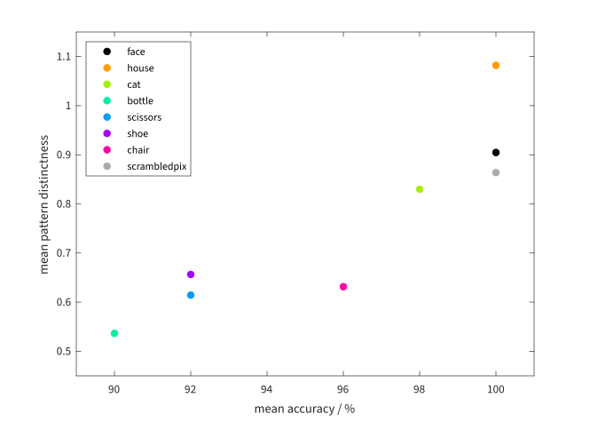

% select subject
sub = 'subj1';
% load information
load(fullfile(sub, 'info.mat'))
% directory with estimated model
modelDir = fullfile(sub, 'model');Pairwise Cross-validated MANOVA
Pattern distinctness is computed in a way approximating the original analysis
Define contrasts and analyses
Haxby et al. used a pairwise correlation-based classifier applied to parameter estimates for each condition, estimated across even and odd sessions, respectively.
Cross-validated MANOVA replaces accuracy based on classification by explained multivariate variance based on contrasts. The equivalent of pairwise classification is a contrast with a 1 for one of the two categories, a −1 for the other, and zeros otherwise. We construct these 28 contrasts, and then analyses based on them using two folds, odd → even and even → odd:
% construct pairwise contrasts and analyses
analyses = cell(nConds, nConds);
odd = (mod(1 : nSessions, 2) == 1);
even = (mod(1 : nSessions, 2) == 0);
for i = 1 : nConds
for j = i + 1 : nConds
C = zeros(nConds, 1);
C([i, j]) = [1, -1];
analyses{i, j} = Analysis(C, C, [odd ; even], [even ; odd]);
end
end
% reduce to defined analyses
ind = find(~cellfun(@isempty, analyses)) .';
analyses = analyses(ind);For illustration, analysis #12 has this structure:
analyses{12}.show()Run analyses on region of interest
Haxby et al. applied their analysis to several regions of interest. The data available to us contain masks for three regions, of which we here use the first.
[Ds, ps] = cvCrossManovaRegion(modelDir, regions(1), analyses);
cvCrossManovaRegion
loading data via subj1/model/SPM.mat
27638 voxels within brain mask
572 voxels within brain mask in subj1/mask4_vt.nii
572 voxels within brain mask in all regions
reading images from subj1/rbold.nii,????
1452 of 1452 volumes loaded
whitening
high-pass-filtering
sum(fs) = 1452 - 48 - 180 = 1224 [SPM: trRV = 1224 erdf = 1224]
computing Cross-validated (Cross-) MANOVA
CvCrossManova:
Data:
session n p q f
1 121 572 15 102
2 121 572 15 102
3 121 572 15 102
4 121 572 15 102
5 121 572 15 102
6 121 572 15 102
7 121 572 15 102
8 121 572 15 102
9 121 572 15 102
10 121 572 15 102
11 121 572 15 102
12 121 572 15 102
lambda: 1e-08
Analysis 1:
2 fold(s), 12 session(s)
CA = CB: 8 × 1, 1-dimensional
no permutations (besides neutral)
Analysis 2:
2 fold(s), 12 session(s)
CA = CB: 8 × 1, 1-dimensional
no permutations (besides neutral)
Analysis 3:
2 fold(s), 12 session(s)
CA = CB: 8 × 1, 1-dimensional
no permutations (besides neutral)
Analysis 4:
2 fold(s), 12 session(s)
CA = CB: 8 × 1, 1-dimensional
no permutations (besides neutral)
Analysis 5:
2 fold(s), 12 session(s)
CA = CB: 8 × 1, 1-dimensional
no permutations (besides neutral)
Analysis 6:
2 fold(s), 12 session(s)
CA = CB: 8 × 1, 1-dimensional
no permutations (besides neutral)
Analysis 7:
2 fold(s), 12 session(s)
CA = CB: 8 × 1, 1-dimensional
no permutations (besides neutral)
Analysis 8:
2 fold(s), 12 session(s)
CA = CB: 8 × 1, 1-dimensional
no permutations (besides neutral)
Analysis 9:
2 fold(s), 12 session(s)
CA = CB: 8 × 1, 1-dimensional
no permutations (besides neutral)
Analysis 10:
2 fold(s), 12 session(s)
CA = CB: 8 × 1, 1-dimensional
no permutations (besides neutral)
Analysis 11:
2 fold(s), 12 session(s)
CA = CB: 8 × 1, 1-dimensional
no permutations (besides neutral)
Analysis 12:
2 fold(s), 12 session(s)
CA = CB: 8 × 1, 1-dimensional
no permutations (besides neutral)
Analysis 13:
2 fold(s), 12 session(s)
CA = CB: 8 × 1, 1-dimensional
no permutations (besides neutral)
Analysis 14:
2 fold(s), 12 session(s)
CA = CB: 8 × 1, 1-dimensional
no permutations (besides neutral)
Analysis 15:
2 fold(s), 12 session(s)
CA = CB: 8 × 1, 1-dimensional
no permutations (besides neutral)
Analysis 16:
2 fold(s), 12 session(s)
CA = CB: 8 × 1, 1-dimensional
no permutations (besides neutral)
Analysis 17:
2 fold(s), 12 session(s)
CA = CB: 8 × 1, 1-dimensional
no permutations (besides neutral)
Analysis 18:
2 fold(s), 12 session(s)
CA = CB: 8 × 1, 1-dimensional
no permutations (besides neutral)
Analysis 19:
2 fold(s), 12 session(s)
CA = CB: 8 × 1, 1-dimensional
no permutations (besides neutral)
Analysis 20:
2 fold(s), 12 session(s)
CA = CB: 8 × 1, 1-dimensional
no permutations (besides neutral)
Analysis 21:
2 fold(s), 12 session(s)
CA = CB: 8 × 1, 1-dimensional
no permutations (besides neutral)
Analysis 22:
2 fold(s), 12 session(s)
CA = CB: 8 × 1, 1-dimensional
no permutations (besides neutral)
Analysis 23:
2 fold(s), 12 session(s)
CA = CB: 8 × 1, 1-dimensional
no permutations (besides neutral)
Analysis 24:
2 fold(s), 12 session(s)
CA = CB: 8 × 1, 1-dimensional
no permutations (besides neutral)
Analysis 25:
2 fold(s), 12 session(s)
CA = CB: 8 × 1, 1-dimensional
no permutations (besides neutral)
Analysis 26:
2 fold(s), 12 session(s)
CA = CB: 8 × 1, 1-dimensional
no permutations (besides neutral)
Analysis 27:
2 fold(s), 12 session(s)
CA = CB: 8 × 1, 1-dimensional
no permutations (besides neutral)
Analysis 28:
2 fold(s), 12 session(s)
CA = CB: 8 × 1, 1-dimensional
no permutations (besides neutral)The results are contained in column 1 of the cell array Ds. We assemble them into a matrix, filling in the identical values in the lower triangular part and leaving zeros on the diagonal, and visualise the matrix as a heatmap:
% assemble
DsMatrix = zeros(nConds, nConds);
DsMatrix(ind) = [Ds{:, 1}];
DsMatrix = DsMatrix + DsMatrix .';
% visualize
fig = figure();
fig.Position(3:4) = [750, 674];
heatmap(conditions, conditions, DsMatrix, ...
FontName=get(0, 'defaultTextFontName'));
ylabel(gca().NodeChildren(2), 'D')Comparison with original analysis results
Haxby et al.’s main result (Table 1) was the identification accuracy for each of the eight categories averaged across classification pairs, and then averaged across six subjects. For ‘all ventral temporal object-selective cortex’, presumably corresponding to the first of the available masks (mask4_vt.nii) they reported the following accuracies (in percent):
meanAcc = [100, 100, 98, 90, 92, 92, 96, 100];Our corresponding result is the average pattern distinctness across the 7 pairwise contrasts each category was involved in:
meanD = sum(DsMatrix) / (nConds - 1)meanD =
Columns 1 through 6
0.90465 1.0821 0.82983 0.53644 0.61424 0.65634
Columns 7 through 8
0.63137 0.86377Plotted against each other:
fig = figure();
fig.Position(3:4) = [750, 713];
for i = 1 : nConds
plot(meanAcc(i), meanD(i), '.', Color=colors(i), MarkerSize=20)
hold all
end
legend(conditions, Interpreter="none", Location="NorthWest")
xlim([89, 101])
ylim([0.45, 1.15])
xlabel("mean accuracy / %")
ylabel("mean pattern distinctness")

The ranking is similar though not identical. Note that the results cannot be completely equivalent since our analysis is based on one subject, while the mean accuracy is additionally averaged across subjects.